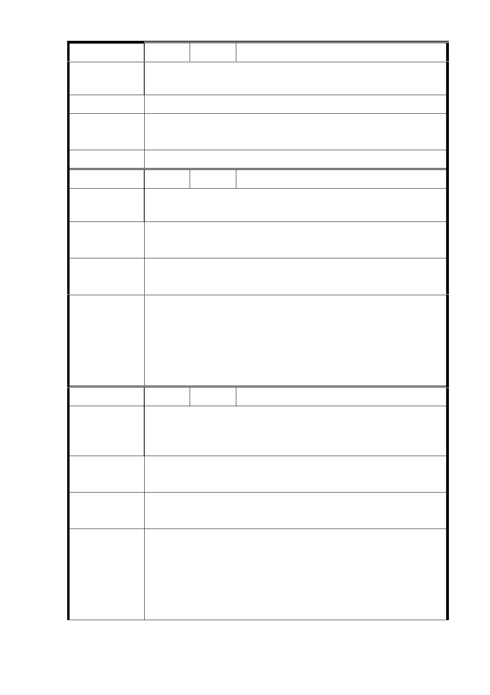

編 號 8 陳情人 邱雅倫
請兌現當初「文教使用」之承諾!台北市蚊子地太多、自己
陳 情 理 由 去找!!
建 議 辦 法 不惜抗爭切腹示諫!政府殺人、騙子!!
市府回應
明倫國小校舍狀況，同編號 5-1。
說明
委 員 會 決 議 依市府回應說明辦理。
編 號 9 陳情人 徐靜怡
原校園建築仍可使用不該浪費另作他用，目前大同區 0～6
陳 情 理 由 歲 9000 多人，另明倫國小 5 個里有 2000 人。請把校園留下!
中繼宅可用現今明倫旁北市就業輔導中心或者劍潭活動中
建議辦法
心!
市 府 回 應 1. 明倫國小校舍狀況，同編號 5-1。
說 明 2. 托幼需求，同編號 5-2。
1.依市府回應說明辦理。
2.本案一、二樓層應作為公共服務，包括托幼、公共保母中
委 員 會 決 議 心、社區圖書館等社福及教育等公共服務使用，以及社
區零售、青年創業等，並不得作為住宅使用。
編 號 10 陳情人 張廖淑燕
原明倫國小校園還可以使用，不應該打掉變更其他用途，而
陳 情 理 由 且目前大同區 0～6 歲需被照顧 2000 多人，故應留下校地，
維持原教育用途。
中繼住宅非一時之急，需以長期考量，畢竟這動一髮牽動全
建議辦法
身，花的都是人民辛苦的納稅錢，市長請三思!
市 府 回 應 1. 明倫國小校舍狀況，同編號 5-1。
說 明 2. 托幼需求，同編號 5-2。
1.依市府回應說明辦理。
2.本案一、二樓層應作為公共服務，包括托幼、公共保母中
委 員 會 決 議 心、社區圖書館等社福及教育等公共服務使用，以及社
區零售、青年創業等，並不得作為住宅使用。
10